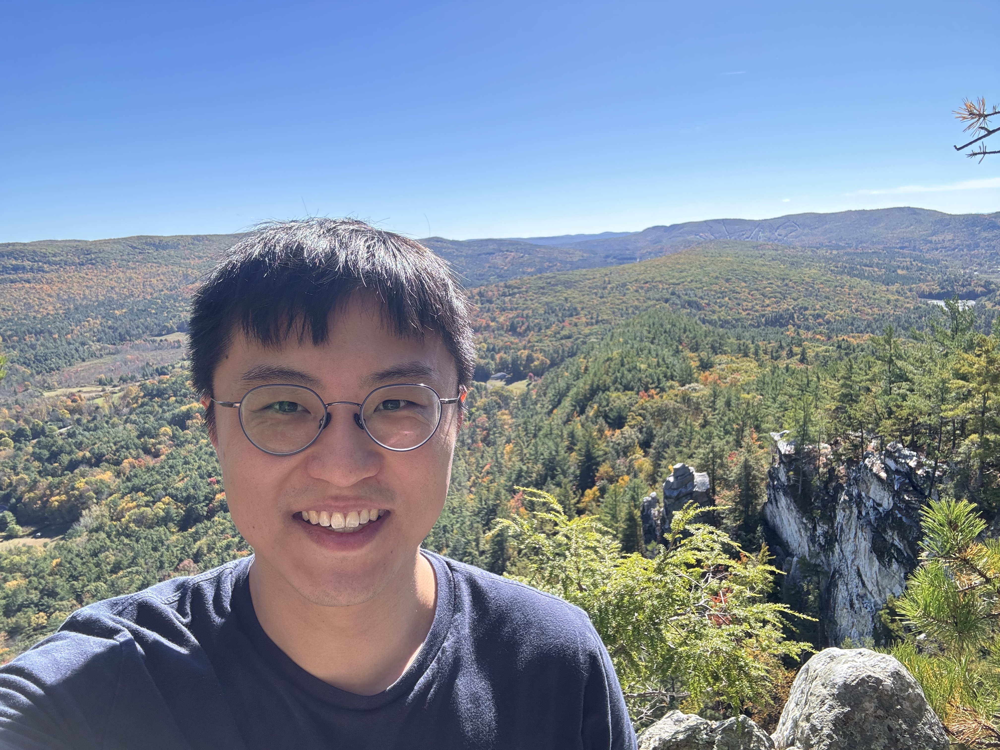

Weilin Li's Homepage

Assistant Professor, CUNY City College
Doctoral Faculty, CUNY Graduate Center
Office: Room 415, Marshak Science Building
Email: wli6@ccny.cuny.edu
Biography
Hello, welcome to my personal webpage!
My research area is applied and computational harmonic analysis. Broadly speaking, I analyze and develop numerical methods that decompose and reconstruct data. More specifically, my current research interests lie in the computational theory of super-resolution and rigorous methods for compression and quantization. My work is supported by the National Science Foundation, PSC-CUNY, and the Foundation for City College.
Before joing City University of New York, I was a Courant Instructor at New York University. Before that, I received my PhD in mathematics from the University of Maryland, College Park. Here is a brief CV.
Seminars
For the 2025-26 academic year, I am co-organizing:
Please let me know if you are interested in attending or giving a talk!
Publications and Preprints (Google Scholar)
Preprints
Journal Articles
- Concerning the stability of exponential systems and Fourier matrices
Oleg Asipchuk, Laura De Carli, and Weilin Li
Journal of Fourier Analysis and Applications, to appear
- Subspace and DOA estimation under coarse quantization
Sjoerd Dirksen, Weilin Li, and Johannes Maly
IEEE Transactions on Information Theory, 2025
- Nonharmonic multivariate Fourier transforms and matrices: condition numbers and hyperplane geometry
Weilin Li
Applied and Computational Harmonic Analysis, 2025
- Multiscale estimates for the condition number of non-harmonic Fourier matrices
Weilin Li
Mathematics of Computation, 2025
- Approximation with one-bit polynomials in Bernstein form
C. Sinan Güntürk and Weilin Li
Constructive Approximation (special issue for Ron DeVore's 80th birthday), 2023
- A range
characterization of the single-quadrant ADRT
Weilin Li, Kui Ren, and Donsub Rim
Mathematics of Computation, 2023
- Stability and super-resolution of MUSIC and ESPRIT for multi-snapshot spectral estimation
Weilin Li, Zengying Zhu, Weiguo Gao, and Wenjing Liao
IEEE Transactions on Signal Processing, 2022
- Quantization
for spectral super-resolution
C. Sinan Güntürk and Weilin Li
Constructive Approximation, 2022
- Generalization
error of minimum weighted norm and kernel interpolation
Weilin Li
SIAM Journal on Mathematics of Data Science, 2021
- Super-resolution
limit of the ESPRIT algorithm
Weilin Li, Wenjing Liao, and Albert Fannjiang
IEEE Transactions on Information Theory, 2020
- 3-D
Fourier scattering transform and classification of hyperspectral
images
Ilya Kavalerov, Weilin Li, Wojciech Czaja, and Rama Chellappa
IEEE Transactions on Geoscience and Remote Sensing,
2021
- Experiments
in unmanned aerial vehicle/unmanned ground vehicle radiation
search
John Peterson, Weilin Li, Brian Cesar-Tondreau, John Bird, Kevin
Kochersberger, Wojciech Czaja, and Morgan McLean
Journal of Field Robotics, 2019
-
Stable super-resolution limit and smallest singular value of
restricted Fourier matrices
Weilin Li and Wenjing Liao
Applied and Computational Harmonic Analysis, 2021
[This paper won the 2021 Charles Chui Young Researcher Best Paper award]
- Rotationally
invariant time-frequency scattering transforms
Wojciech Czaja and Weilin Li
Journal of Fourier Analysis and Applications, 2020
-
Analysis of time-frequency scattering transforms
Wojciech Czaja and Weilin Li
Applied and Computational Harmonic Analysis, 2019
-
Super-resolution by means of Beurling minimal extrapolation
John J. Benedetto and Weilin Li
Applied and Computational Harmonic Analysis, 2020
-
Boundary value problems on a half Sierpinski gasket
Weilin Li and Robert S. Strichartz
Journal of Fractal Geometry, 2014
Book Chapters
Conference Proceedings
- New perspectives on Fourier matrices
Weilin Li
15th International Conference on Sampling Theory and Applications (SampTA), 2025
- Subspace estimation under coarse quantization
Sjoerd Dirksen, Weilin Li, Johannes Maly
15th International Conference on Sampling Theory and Applications (SampTA), 2025
- Uniform Approximation by Polynomials with Integer Coefficients via the Bernstein Lattice
C. Sinan Güntürk and Weilin Li
Combinatorial and Additive Number Theory VI, 2025
- Near-optimality of ΣΔ quantization for L2-approximation with polynomials in Bernstein form
C. Sinan Güntürk and Weilin Li
14th International Conference on Sampling Theory and Applications (SampTA), 2023
- Exploring the high dimensional geometry of HSI features
Wojciech Czaja, Ilya Kavalerov, and Weilin Li
Workshop on Hyperspectral Imaging and Signal Processing: Evolution in Remote Sensing (WHISPERS), 2021
- Conditioning of restricted Fourier matrices and super-resolution of MUSIC
Weilin Li and Wenjing Liao
13th International Conference on Sampling Theory and Applications (SampTA), 2019
- High performance quantization for spectral super-resolution
C. Sinan Güntürk and Weilin Li
13th International Conference on Sampling Theory and Applications (SampTA), 2019
- Unmanned aircraft applications in radiological surveys
Kevin Kochersberger, John Peterson, Prashant Kumar, John Bird, Morgan McLean, Wojciech Czaja, Weilin Li, and Nathaniel Monson
IEEE International Symposium on Technologies for Homeland Security, 2018
- Scattering transforms and classification of hyperspectral images
Wojciech Czaja, Ilya Kavalerov, and Weilin Li
SPIE, Algorithms and Technologies for Multispectral, Hyperspectral, and Ultraspectral Imagery, 2018
Recorded Talks
Software
For code, please see my Github profile.